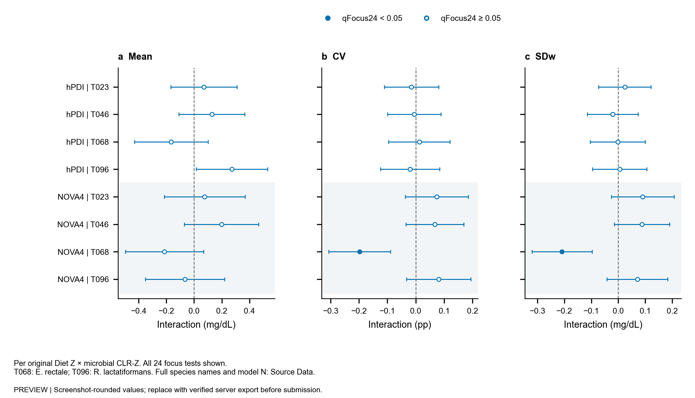
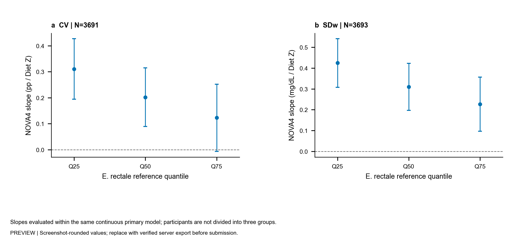
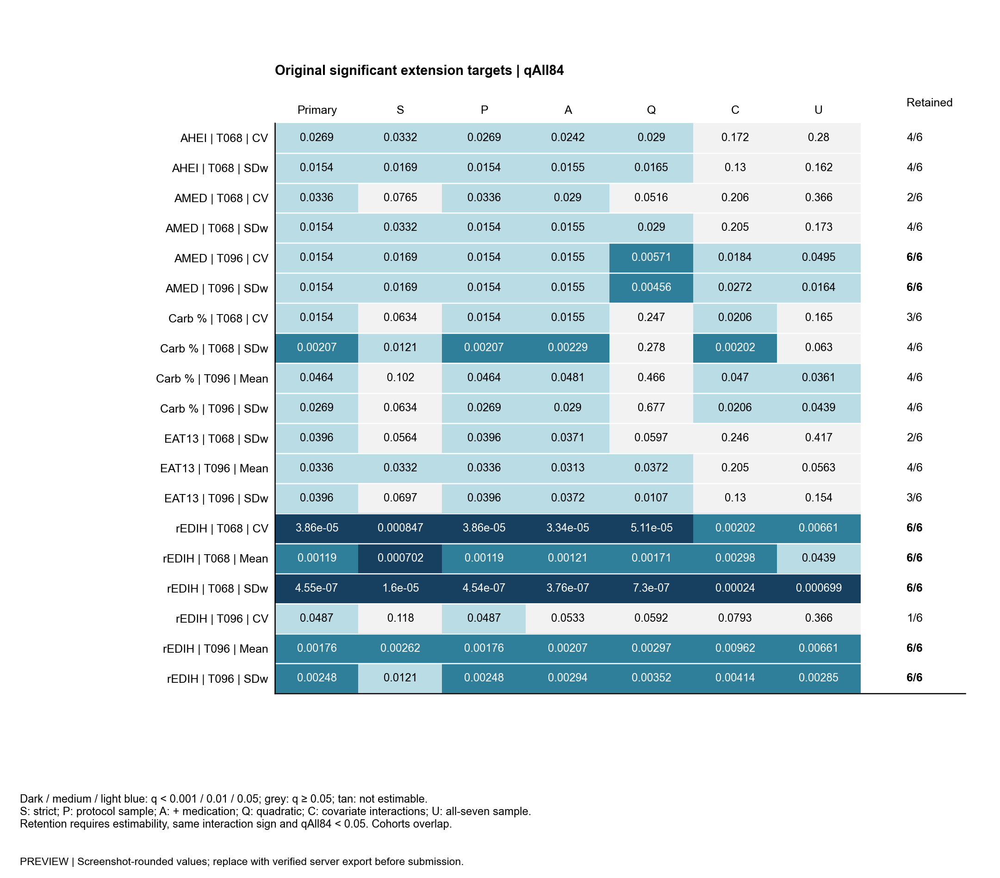
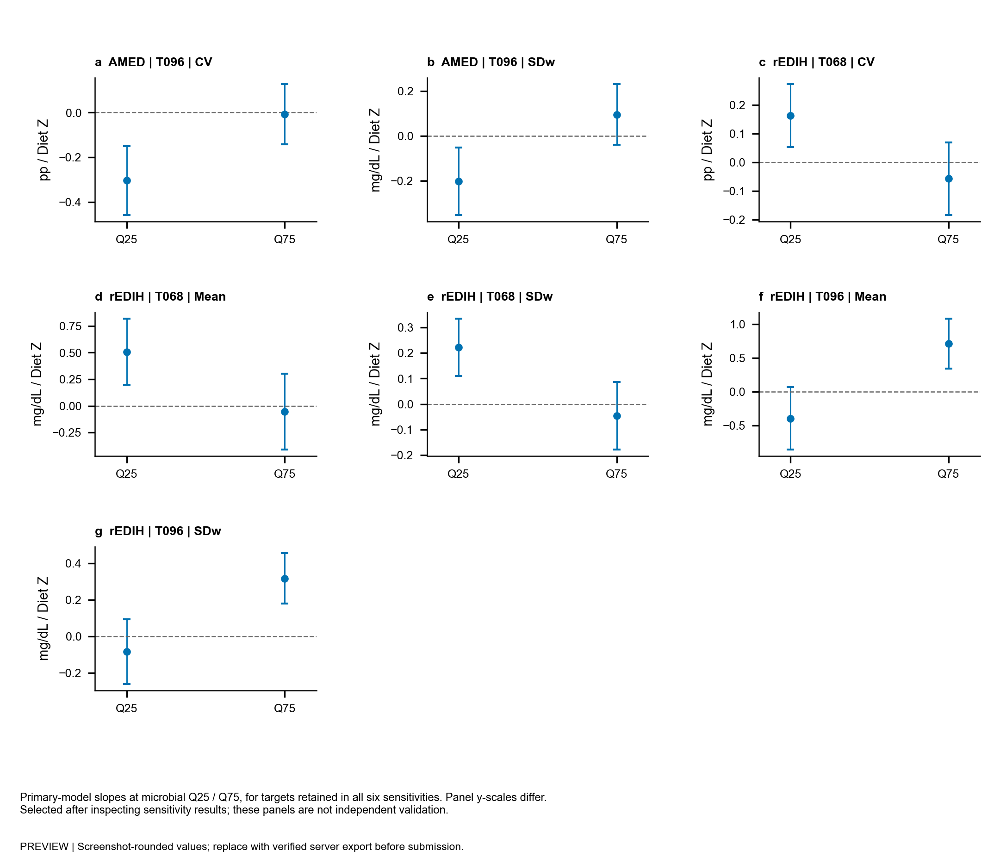

SCREENSHOT_PREVIEW · 原显著扩展 19 项；六组均保留 7 项。各图和表均有可追溯汇总数据。
中英文结果与方法 · 英文图表说明 · Source Data口径
| exposure | taxon | outcome | n | unit | interaction_p | q_focus24 | q_all84 | double_iqr_beta_native | double_iqr_ci_low_native | double_iqr_ci_high_native | double_iqr_status | condition_number | max_leverage | interaction_delta_r2 | support_min_tail_n | Beta [95% CI] |
|---|---|---|---|---|---|---|---|---|---|---|---|---|---|---|---|---|
| hPDI | T023 | Mean | 4137 | mg/dL | NA | 0.884 | 0.761 | NA | NA | NA | NA | NA | NA | NA | NA | 0.0707 [-0.168, 0.31] |
| hPDI | T023 | CV | 4136 | percentage points | NA | 0.908 | 0.871 | NA | NA | NA | NA | NA | NA | NA | NA | -0.0151 [-0.111, 0.0804] |
| hPDI | T023 | SDw | 4137 | mg/dL | NA | 0.884 | 0.805 | NA | NA | NA | NA | NA | NA | NA | NA | 0.0241 [-0.0729, 0.121] |
| hPDI | T046 | Mean | 4137 | mg/dL | NA | 0.535 | 0.451 | NA | NA | NA | NA | NA | NA | NA | NA | 0.129 [-0.11, 0.367] |
| hPDI | T046 | CV | 4136 | percentage points | NA | 0.962 | 0.968 | NA | NA | NA | NA | NA | NA | NA | NA | -0.00512 [-0.0995, 0.0893] |
| hPDI | T046 | SDw | 4137 | mg/dL | NA | 0.884 | 0.808 | NA | NA | NA | NA | NA | NA | NA | NA | -0.0208 [-0.115, 0.073] |
| hPDI | T068 | Mean | 4137 | mg/dL | NA | 0.444 | 0.381 | NA | NA | NA | NA | NA | NA | NA | NA | -0.165 [-0.431, 0.1] |
| hPDI | T068 | CV | 4136 | percentage points | NA | 0.932 | 0.914 | NA | NA | NA | NA | NA | NA | NA | NA | 0.0129 [-0.0957, 0.121] |
| hPDI | T068 | SDw | 4137 | mg/dL | NA | 0.971 | 0.983 | NA | NA | NA | NA | NA | NA | NA | NA | -0.00189 [-0.104, 0.1] |
| hPDI | T096 | Mean | 4137 | mg/dL | NA | 0.308 | 0.113 | NA | NA | NA | NA | NA | NA | NA | NA | 0.272 [0.0145, 0.53] |
| hPDI | T096 | CV | 4136 | percentage points | NA | 0.887 | 0.819 | NA | NA | NA | NA | NA | NA | NA | NA | -0.0203 [-0.124, 0.0838] |
| hPDI | T096 | SDw | 4137 | mg/dL | NA | 0.962 | 0.968 | NA | NA | NA | NA | NA | NA | NA | NA | 0.00503 [-0.0959, 0.106] |
| NOVA4 | T023 | Mean | 3693 | mg/dL | NA | 0.884 | 0.8 | NA | NA | NA | NA | NA | NA | NA | NA | 0.0763 [-0.216, 0.369] |
| NOVA4 | T023 | CV | 3691 | percentage points | NA | 0.444 | 0.353 | NA | NA | NA | NA | NA | NA | NA | NA | 0.0742 [-0.0366, 0.185] |
| NOVA4 | T023 | SDw | 3693 | mg/dL | NA | 0.444 | 0.297 | NA | NA | NA | NA | NA | NA | NA | NA | 0.0905 [-0.0258, 0.207] |
| NOVA4 | T046 | Mean | 3693 | mg/dL | NA | 0.444 | 0.322 | NA | NA | NA | NA | NA | NA | NA | NA | 0.198 [-0.0711, 0.466] |
| NOVA4 | T046 | CV | 3691 | percentage points | NA | 0.444 | 0.36 | NA | NA | NA | NA | NA | NA | NA | NA | 0.067 [-0.0349, 0.169] |
| NOVA4 | T046 | SDw | 3693 | mg/dL | NA | 0.444 | 0.234 | NA | NA | NA | NA | NA | NA | NA | NA | 0.0878 [-0.0144, 0.19] |
| NOVA4 | T068 | Mean | 3693 | mg/dL | NA | 0.444 | 0.316 | NA | NA | NA | NA | NA | NA | NA | NA | -0.214 [-0.497, 0.0695] |
| NOVA4 | T068 | CV | 3691 | percentage points | NA | 0.004581 | 0.00401 | -0.2489 | -0.3862 | -0.1117 | OK | 7.01 | 0.1167 | 0.003244 | 171 | -0.1978 [-0.3068, -0.08871] |
| NOVA4 | T068 | SDw | 3693 | mg/dL | NA | 0.004581 | 0.00298 | -0.2625 | -0.4028 | -0.1222 | OK | 7.01 | 0.1167 | 0.00392 | 171 | -0.2087 [-0.3202, -0.09712] |
| NOVA4 | T096 | Mean | 3693 | mg/dL | NA | 0.884 | 0.805 | NA | NA | NA | NA | NA | NA | NA | NA | -0.0659 [-0.352, 0.22] |
| NOVA4 | T096 | CV | 3691 | percentage points | NA | 0.444 | 0.334 | NA | NA | NA | NA | NA | NA | NA | NA | 0.0807 [-0.0327, 0.194] |
| NOVA4 | T096 | SDw | 3693 | mg/dL | NA | 0.444 | 0.381 | NA | NA | NA | NA | NA | NA | NA | NA | 0.0706 [-0.0423, 0.183] |
| exposure | taxon | outcome | n | interaction_p | q_all84 | min_sensitivity_n | S qAll84 | P qAll84 | A qAll84 | Q qAll84 | C qAll84 | U qAll84 | same_direction_all_six | retained_sensitivity_count | retained_all_six | Beta [95% CI] |
|---|---|---|---|---|---|---|---|---|---|---|---|---|---|---|---|---|
| AHEI | T068 | CV | 4136 | NA | 0.02693 | 3612 | 0.0332 | 0.0269 | 0.0242 | 0.029 | 0.172 | 0.28 | True | 4 | False | -0.152 [-0.2576, -0.04647] |
| AHEI | T068 | SDw | 4137 | NA | 0.01537 | 3612 | 0.0169 | 0.0154 | 0.0155 | 0.0165 | 0.13 | 0.162 | True | 4 | False | -0.1686 [-0.2771, -0.06007] |
| AMED | T068 | CV | 4136 | NA | 0.03356 | 3612 | 0.0765 | 0.0336 | 0.029 | 0.0516 | 0.206 | 0.366 | True | 2 | False | -0.1436 [-0.2476, -0.03965] |
| AMED | T068 | SDw | 4137 | NA | 0.01537 | 3612 | 0.0332 | 0.0154 | 0.0155 | 0.029 | 0.205 | 0.173 | True | 4 | False | -0.1605 [-0.264, -0.057] |
| AMED | T096 | CV | 4136 | NA | 0.01537 | 3612 | 0.0169 | 0.0154 | 0.0155 | 0.00571 | 0.0184 | 0.0495 | True | 6 | True | 0.1663 [0.05974, 0.2729] |
| AMED | T096 | SDw | 4137 | NA | 0.01537 | 3612 | 0.0169 | 0.0154 | 0.0155 | 0.00456 | 0.0272 | 0.0164 | True | 6 | True | 0.1671 [0.06027, 0.274] |
| Carbohydrate_pct | T068 | CV | 4114 | NA | 0.01537 | 3612 | 0.0634 | 0.0154 | 0.0155 | 0.247 | 0.0206 | 0.165 | True | 3 | False | -0.109 [-0.1789, -0.0392] |
| Carbohydrate_pct | T068 | SDw | 4115 | NA | 0.002072 | 3612 | 0.0121 | 0.00207 | 0.00229 | 0.278 | 0.00202 | 0.063 | True | 4 | False | -0.1288 [-0.1945, -0.0631] |
| Carbohydrate_pct | T096 | Mean | 4115 | NA | 0.0464 | 3612 | 0.102 | 0.0464 | 0.0481 | 0.466 | 0.047 | 0.0361 | True | 4 | False | 0.3886 [0.08893, 0.6883] |
| Carbohydrate_pct | T096 | SDw | 4115 | NA | 0.02693 | 3612 | 0.0634 | 0.0269 | 0.029 | 0.677 | 0.0206 | 0.0439 | True | 4 | False | 0.1277 [0.03894, 0.2164] |
| EAT13 | T068 | SDw | 4055 | NA | 0.03961 | 3612 | 0.0564 | 0.0396 | 0.0371 | 0.0597 | 0.246 | 0.417 | True | 2 | False | -0.1399 [-0.2448, -0.03501] |
| EAT13 | T096 | Mean | 4055 | NA | 0.03356 | 3612 | 0.0332 | 0.0336 | 0.0313 | 0.0372 | 0.205 | 0.0563 | True | 4 | False | 0.3913 [0.1099, 0.6727] |
| EAT13 | T096 | SDw | 4055 | NA | 0.03961 | 3612 | 0.0697 | 0.0396 | 0.0372 | 0.0107 | 0.13 | 0.154 | True | 3 | False | 0.1407 [0.03585, 0.2456] |
| rEDIH | T068 | CV | 4136 | NA | 3.856e-05 | 3612 | 0.000847 | 3.86e-05 | 3.34e-05 | 5.11e-05 | 0.00202 | 0.00661 | True | 6 | True | -0.2293 [-0.3208, -0.1379] |
| rEDIH | T068 | Mean | 4137 | NA | 0.001194 | 3612 | 0.000702 | 0.00119 | 0.00121 | 0.00171 | 0.00298 | 0.0439 | True | 6 | True | -0.5865 [-0.8672, -0.3059] |
| rEDIH | T068 | SDw | 4137 | NA | 4.545e-07 | 3612 | 1.6e-05 | 4.54e-07 | 3.76e-07 | 7.3e-07 | 0.00024 | 0.000699 | True | 6 | True | -0.2807 [-0.3748, -0.1866] |
| rEDIH | T096 | CV | 4136 | 0.01218 | 0.04872 | 3612 | 0.118 | 0.0487 | 0.0533 | 0.0592 | 0.0793 | 0.366 | True | 1 | False | 0.1401 [0.03058, 0.2496] |
| rEDIH | T096 | Mean | 4137 | NA | 0.001758 | 3612 | 0.00262 | 0.00176 | 0.00207 | 0.00297 | 0.00962 | 0.00661 | True | 6 | True | 0.6231 [0.3128, 0.9333] |
| rEDIH | T096 | SDw | 4137 | NA | 0.002479 | 3612 | 0.0121 | 0.00248 | 0.00294 | 0.00352 | 0.00414 | 0.00285 | True | 6 | True | 0.2262 [0.1081, 0.3444] |
| model | extension_planned | extension_fitted | extension_q_all84_below_alpha | reference_hits | reference_hits_retained | new_significant_outside_reference | n_min | n_max | limited_support_tests |
|---|---|---|---|---|---|---|---|---|---|
| strict | 60 | 60 | 12 | 19 | 12 | 0 | 3805 | 3881 | 0 |
| protocol_same_sample | 60 | 60 | 19 | 19 | 19 | 0 | 4054 | 4137 | 0 |
| protocol_adjusted | 60 | 60 | 18 | 19 | 18 | 0 | 4054 | 4137 | 0 |
| quadratic | 60 | 60 | 13 | 19 | 12 | 1 | 4054 | 4137 | 0 |
| covariate_interactions | 60 | 60 | 12 | 19 | 11 | 1 | 4054 | 4137 | 0 |
| common_all7_sample | 60 | 60 | 9 | 19 | 9 | 0 | 3612 | 3612 | 0 |
| exposure | taxon | outcome | n | interaction_p | q_all84 | max_sensitivity_q_all84 | retained_sensitivity_count | Beta [95% CI] |
|---|---|---|---|---|---|---|---|---|
| AMED | T096 | CV | 4136 | NA | 0.01537 | 0.0495 | 6 | 0.1663 [0.05974, 0.2729] |
| AMED | T096 | SDw | 4137 | NA | 0.01537 | 0.0272 | 6 | 0.1671 [0.06027, 0.274] |
| rEDIH | T068 | CV | 4136 | NA | 3.856e-05 | 0.00661 | 6 | -0.2293 [-0.3208, -0.1379] |
| rEDIH | T068 | Mean | 4137 | NA | 0.001194 | 0.0439 | 6 | -0.5865 [-0.8672, -0.3059] |
| rEDIH | T068 | SDw | 4137 | NA | 4.545e-07 | 0.000699 | 6 | -0.2807 [-0.3748, -0.1866] |
| rEDIH | T096 | Mean | 4137 | NA | 0.001758 | 0.00962 | 6 | 0.6231 [0.3128, 0.9333] |
| rEDIH | T096 | SDw | 4137 | NA | 0.002479 | 0.0121 | 6 | 0.2262 [0.1081, 0.3444] |
PDF · Editable SVG · Source Data

PDF · Editable SVG · Source Data

PDF · Editable SVG · Source Data

PDF · Editable SVG · Source Data
